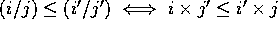

In this section we describe a development of the rational numbers from the library integers. In this work a rational number is represented by the sigma type consisting of a pair of integers and a proof that the second on is strictly greater than zero. The tuple (i,j,p:0<j) represents the rational i/j. This choice makes the definition of order relations, max and min very simple (since  ) but complicates the definition of reciprocal and division.
The file defines the usual operations on rationals and proves that they satisfy the field axioms. We give the computation part of the function definitions but use ... to indicate omission of the proof term part. We omit the theorems in this listing.
** Mark "rat" **
Rat_carrier = int.1#<j:int.1>Lt_zed zero_zed j : Type
eq_on_rats = [r,s:Rat_carrier]
eq (times_zed r.1 s.2.1) (times_zed r.2.1 s.1)
: Rat_carrier->Rat_carrier->Prop
rat_eq_refl = ... : eq_refl|Rat_carrier|eq_on_rats
rat_eq_sym = ... : eq_sym|Rat_carrier|eq_on_rats
rat_eq_trans = ... : eq_trans|Rat_carrier|eq_on_rats
rat = <Rat_carrier:Type>
<eq_on_rats:Rat_carrier -> Rat_carrier -> Prop> ...: set
plus_on_rats = [r,s:rat.1]
(plus_zed (times_zed r.1 s.2.1) (times_zed r.2.1 s.1),
times_zed r.2.1 s.2.1,...) : int.1#<j:int.1>Lt_zed zero_zed j)
: rat.1->rat.1->rat.1
times_on_rats = [r,s:rat.1]
(times_zed r.1 s.1,times_zed r.2.1 s.2.1, ...
:int.1#<j:int.1>Lt_zed zero_zed j)
: rat.1->rat.1->rat.1
minus_on_rats = [r,s:rat.1]
(minus_zed (times_zed r.1 s.2.1) (times_zed r.2.1 s.1),
times_zed r.2.1 s.2.1,... :int.1#<j:int.1>Lt_zed zero_zed j)
: rat.1->rat.1->rat.1
lesseq_rel =
[r,s:rat.1]Le_zed (times_zed r.1 s.2.1) (times_zed r.2.1 s.1)
: rat.1->rat.1->Prop
lessst_rel =
[r,s:rat.1]Lt_zed (times_zed r.1 s.2.1) (times_zed r.2.1 s.1)
: rat.1->rat.1->Prop
ze = (zero_zed,one_zed,zero_Lt_suc_n zero) : rat.1
one_rat = (one_zed,one_zed,zero_Lt_suc_n zero) : rat.1
two_rat = (two_zed,one_zed,zero_Lt_suc_n zero) : rat.1
one_over = [x:nonzeRat](if (bool_pos x.1.1) x.1.2.1 (neg_zed x.1.2.1),
if (bool_pos x.1.1) x.1.1 (neg_zed x.1.1),...
:int.1#<j:int.1>Lt_zed zero_zed j)
: nonzeRat->rat.1
divide = ... : rat.1->nonzeRat->rat.1
max_on_rats = [r,s:rat.1]
(max_zed (times_zed r.1 s.2.1) (times_zed r.2.1 s.1),
times_zed r.2.1 s.2.1, ... :int.1#<j:int.1>Lt_zed zero_zed j)
: rat.1->rat.1->rat.1
min_on_rats = [r,s:rat.1]
(min_zed (times_zed r.1 s.2.1) (times_zed r.2.1 s.1),
times_zed r.2.1 s.2.1, ... :int.1#<j:int.1>Lt_zed zero_zed j)
: rat.1->rat.1->rat.1
half_of = (half, ... : <f:rat.1->rat.1>pres_eq|rat|rat f)
: function rat rat
rat_bool_pos = [r:rat.1]bool_pos r.1 : rat.1->bool
These definitions and theorems in the example file, together with about 50 assumed lemmas are enough to run the construction of the real numbers described in [Jones, 1992].